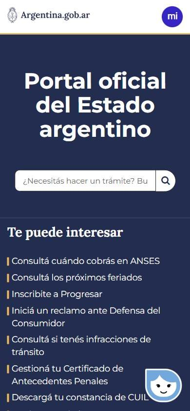
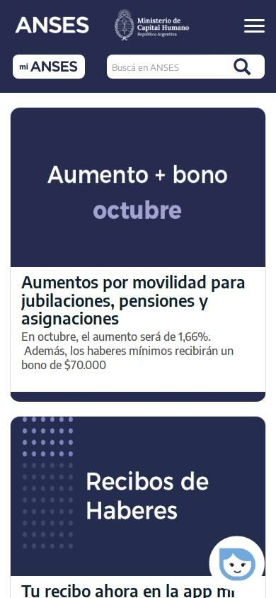
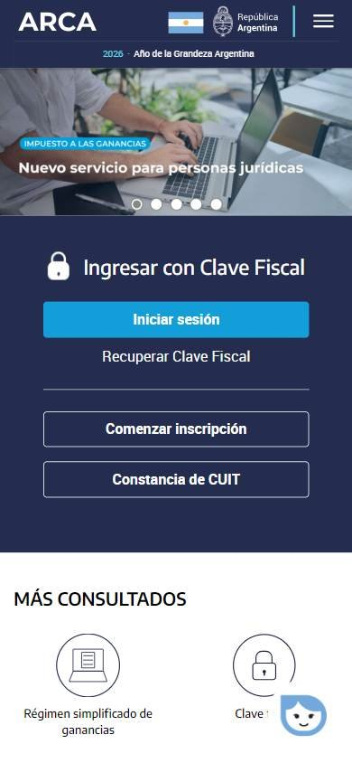

Institucional o de gobierno
Los seleccionados
Los tres sitios más visitados de Argentina, según estadísticas de tráfico.
En resumen: lo que hacen los líderes
La pantalla de inicio de cada uno



Estilo visual
Colores, imágenes, tipografía y cuánta información muestran.
Tu estilo visual debería…
- Azul marino y blanco como base; un color de alerta solo para avisos importantes.
- Tipografía sin serifa grande y legible.
- Íconos de línea o ilustraciones simples para identificar cada trámite.
Lo que tienen en común: Los tres usan una paleta institucional acotada en azul marino y blanco, tipografía sin serifa muy legible e íconos o ilustraciones simples en vez de fotos llamativas.
La paleta de cada uno
Medida sobre la primera pantalla. Los colores de marca salen del header; el resto muestra cuánto espacio ocupa cada color.
Así lo resuelve cada uno
Ficha comparativa
| Aspecto | Argentina.gob.ar | ANSES | AFIP / ARCA |
|---|---|---|---|
| Paleta | Acotada: azul marino + blanco | Acotada: azul marino + blanco + turquesa para alertas | Acotada: azul marino + blanco + celeste |
| Imágenes | Ilustraciones simples | Sin fotos, tarjetas de color | Foto de persona trabajando + íconos |
| Tipografía | Sin serifa, clara, títulos grandes | Sin serifa, títulos grandes en tarjetas | Sin serifa |
| Densidad | Media, con aire | Media | Media |
| Botones | Píldora violeta «miArgentina» | Píldora blanca «mi ANSES» | Rectos azules «Iniciar sesión» |
| Íconos | Mascota de asistente virtual | Ícono grande de alerta | De línea, en círculos, para trámites |
Header
La franja de arriba con el logo y los accesos.
Tu header debería…
- Logo o nombre del organismo a la izquierda, acompañado del escudo oficial.
- Azul marino como color principal y blanco para el texto.
- A la derecha, un botón de acceso a la cuenta personal («Mi cuenta», «Ingresar con clave»).
Lo que tienen en común: Todos se identifican como sitio oficial con el escudo nacional junto al nombre. Usan azul marino institucional y, a la derecha, un acceso directo a la cuenta personal del ciudadano.
Así lo resuelve cada uno


Ficha comparativa
| Aspecto | Argentina.gob.ar | ANSES | AFIP / ARCA |
|---|---|---|---|
| Fondo | Blanco | Azul marino | Azul marino |
| Logo | Escudo + nombre, a la izquierda | Nombre + escudo del ministerio, a la izquierda | Nombre + descripción, a la izquierda |
| A la derecha | Botón «miArgentina» (violeta) | Buscador y botón «mi ANSES» | Accesos: Contribuyentes, Turnos, Ayuda |
| Sello oficial | Escudo nacional | Escudo nacional | Bandera y escudo |
Buscador
La barra para buscar.
Tu buscador debería…
- Si tu sitio tiene muchos trámites o servicios, poné el buscador como protagonista del inicio.
- Texto de ayuda con una pregunta concreta: «¿Qué trámite necesitás?».
Lo que tienen en común: El buscador se usa para encontrar trámites. Cuando es protagonista, el texto de ayuda pregunta directamente qué trámite necesitás.
Así lo resuelve cada uno


Ficha comparativa
| Aspecto | Argentina.gob.ar | ANSES | AFIP / ARCA |
|---|---|---|---|
| Ubicación | Protagonista, en el centro del banner | En el header, a la derecha | No visible arriba |
| Texto de ayuda | «¿Necesitás hacer un trámite? Buscalo…» | «Buscá en ANSES» | — |
| Forma | Blanca, recta, lupa en cuadrado | Blanca, redondeada, lupa a la derecha | — |
Menú y categorías
Cómo se organizan las secciones.
Tu menú y categorías debería…
- Nombrá las secciones por tareas o momentos de vida («Turnos», «Trabajo», «Jubilaciones»).
- Mostrá abajo una lista de los trámites más buscados, con verbos: «Consultá», «Sacá», «Descargá».
Lo que tienen en común: Las secciones se nombran por lo que la persona necesita hacer o por su situación de vida, no por la estructura interna del organismo.
Así lo resuelve cada uno


Ficha comparativa
| Aspecto | Argentina.gob.ar | ANSES | AFIP / ARCA |
|---|---|---|---|
| Formato | Lista de enlaces «Te puede interesar» | Fila de temas con desplegables sobre franja gris | Accesos chicos en el header |
| Cómo nombra las secciones | Por tarea («Consultá…», «Sacá…») | Por momento de vida («Hijos», «Trabajo», «Jubilaciones») | Por tipo de usuario («Contribuyentes») |
Primera pantalla
Lo primero que se ve debajo del header.
Tu primera pantalla debería…
- Arrancá con lo que la gente viene a hacer: 3 tarjetas grandes con los trámites más buscados.
- Sumá un bloque de avisos útiles (vencimientos, alertas) con un color llamativo pero sobrio.
Lo que tienen en común: El inicio se organiza por tareas concretas: tarjetas o listas con lo más buscado del momento, y avisos útiles (vencimientos, alertas de estafas).
Así lo resuelve cada uno
Ficha comparativa
| Aspecto | Argentina.gob.ar | ANSES | AFIP / ARCA |
|---|---|---|---|
| Formato | Título + buscador sobre azul | Tres tarjetas con los trámites del momento | Foto con titular y panel de ingreso a la derecha |
| Debajo | Lista de trámites y temas con ilustraciones | Aviso de seguridad contra estafas | «Más consultados» y vencimientos del mes |